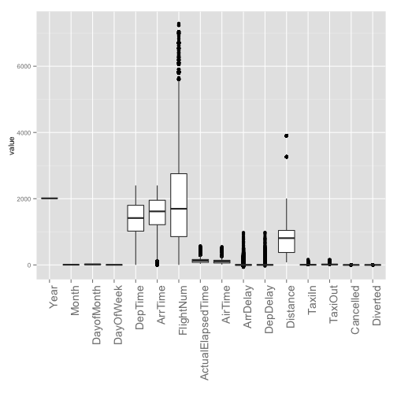
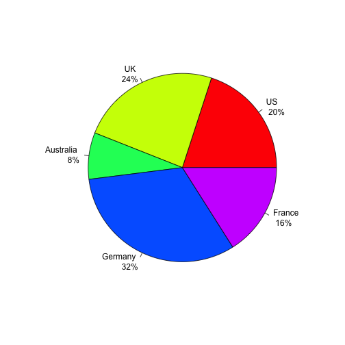
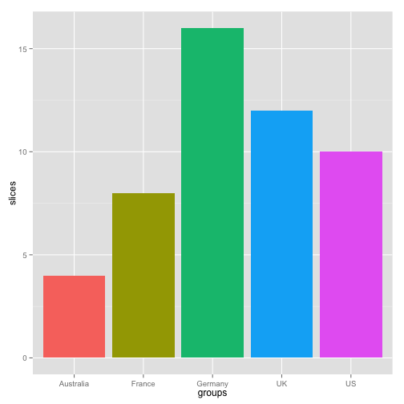
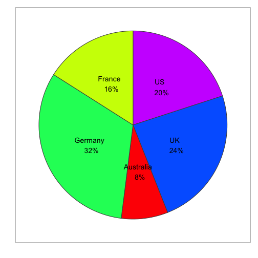

- 데이터 핸들링
- 함수
- 기술 통계
- Visualization
김형준
Data Analyst
a = 1:2; b = 3:5; c = 2:5
cbind(a,b)
## Warning: number of rows of result is not a multiple of vector length (arg
## 1)
## a b
## [1,] 1 3
## [2,] 2 4
## [3,] 1 5
rbind(a,c)
## [,1] [,2] [,3] [,4]
## a 1 2 1 2
## c 2 3 4 5
if (.Platform$OS.type == "unix") {
path_dir = "A"
} else {
path_dir = "B"
windowsFonts(NanumGothic=windowsFont("NanumGothic"))
}
if (!require("dplyr")) {
install.packages("dplyr")
}
for (i in 1:3)
{
print(i)
for (j in 1:3)
print(j)
}
norm_op = function(a,b)
{
norm = a^2 + b^2
return(sqrt(norm))
}
norm_op(1,3) == sqrt(10)
## [1] TRUE
library("hflights")
dim(hflights); nrow(hflights); ncol(hflights)
## [1] 227496 21
## [1] 227496
## [1] 21
colnames(hflights); #range(rownames(hflights))
## [1] "Year" "Month" "DayofMonth"
## [4] "DayOfWeek" "DepTime" "ArrTime"
## [7] "UniqueCarrier" "FlightNum" "TailNum"
## [10] "ActualElapsedTime" "AirTime" "ArrDelay"
## [13] "DepDelay" "Origin" "Dest"
## [16] "Distance" "TaxiIn" "TaxiOut"
## [19] "Cancelled" "CancellationCode" "Diverted"
자료의 특성을 표, 그림, 통계량 등을 사용하여 쉽게 파악할 수 있도록 정리요약
mean(hflights[,"DepTime"]) # 평균-> NA
## [1] NA
mean(hflights[,"DepTime"],na.rm=T) # 평균(missing 제거)
## [1] 1396
sapply(hflights,is.numeric) ## Numeric or not
sapply(hflights[,sapply(hflights,is.numeric)],mean)
sapply(hflights[,sapply(hflights,is.numeric)],function(x) mean(x, na.rm=T))
boxplot(hflights[,sapply(hflights,is.numeric)])
col_sel = colnames(hflights)[sapply(hflights,is.numeric)]
boxplot(hflights[,col_sel], xaxt="n")
text(x = 1:length(col_sel), y = par("usr")[3] - 1, srt = 90, adj = 1,
labels = col_sel, xpd=T)
library("reshape")
hflights_df = hflights[,sapply(hflights,is.numeric)]
hflights_df[,"id"] = 1:nrow(hflights_df)
#head(hflights_df)
hflights_df_m = melt(hflights_df,id="id")
library(ggplot2)
ggplot(hflights_df_m) +
geom_boxplot(aes(x=variable, y=value))+
xlab("")+
theme(text=element_text(size=10),
axis.text.x = element_text(angle = 90, size = 14, hjust=1))
print(paste("# of Missing is", sum(is.na(hflights_df))))
## Warning: Removed 25755 rows containing non-finite values (stat_boxplot).

## [1] "# of Missing is 25755"
summary(iris)
## Sepal.Length Sepal.Width Petal.Length Petal.Width
## Min. :4.30 Min. :2.00 Min. :1.00 Min. :0.1
## 1st Qu.:5.10 1st Qu.:2.80 1st Qu.:1.60 1st Qu.:0.3
## Median :5.80 Median :3.00 Median :4.35 Median :1.3
## Mean :5.84 Mean :3.06 Mean :3.76 Mean :1.2
## 3rd Qu.:6.40 3rd Qu.:3.30 3rd Qu.:5.10 3rd Qu.:1.8
## Max. :7.90 Max. :4.40 Max. :6.90 Max. :2.5
## Species
## setosa :50
## versicolor:50
## virginica :50
##
##
##
boxplot(iris)
colnames(iris)
par(mfrow=c(2,2))
hist(iris[,"Sepal.Length"])
hist(iris[,"Sepal.Length"],prob=T)
hist(iris[,"Sepal.Length"],prob=T)
lines(density(iris[,"Sepal.Length"]))
hist(iris[,"Sepal.Length"], breaks=30)
plot(iris[,"Sepal.Length"])
par(mfrow=c(1,1))
slices <- c(10, 12, 4, 16, 8)
groups <- c("US", "UK", "Australia", "Germany", "France")
pct <- paste(round(slices/sum(slices)*100),"%",sep="")
lbls <- paste(groups, "\n",pct) # add percents to labels
pie(slices,labels = lbls, col=rainbow(length(lbls)))

df_ex = data.frame(slices, groups, lbls, pct)
df_ex$fraction = df_ex$slices / sum(df_ex$slices)
df_ex$ymax = cumsum(df_ex$fraction)
df_ex$ymin = c(0, head(df_ex$ymax, n = -1))

# Pie / Donut plot
Pie = ggplot(data = df_ex, aes(fill = lbls, ymax = ymax, ymin = ymin, xmax = 4, xmin = 3)) +
geom_rect(colour = "grey30", show_guide = FALSE) +
coord_polar(theta = "y") +
# xlim(c(0, 4)) +
theme_bw() +
theme(panel.grid=element_blank()) +
theme(axis.text=element_blank()) +
theme(axis.ticks=element_blank()) +
geom_text(aes(x = 3.5, y = ((ymin+ymax)/2), label = lbls)) +
xlab("") +
ylab("")+
scale_fill_manual(values=rainbow(length(lbls)))
print(Pie)
